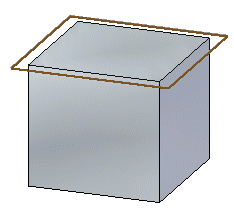
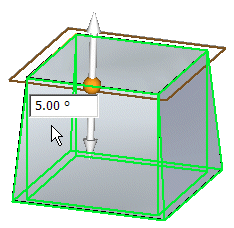
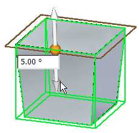
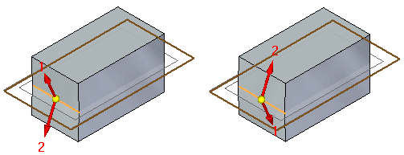
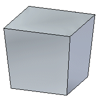

Add a draft angle to a part
-
Choose Home tab→Solids group→Draft.
-
On the Add Draft command bar, click the Draft Options button, and then use the Draft Options dialog box to specify how you want to define the pivot location for the draft feature.
-
Define the draft plane.

-
For an add draft feature defined by a part edge, parting line, or parting surface, select the parting geometry, click the Accept button
 on the command bar, and then click the Next button on the command bar.
on the command bar, and then click the Next button on the command bar. -
Select the faces you want to draft, and define the draft angle or angles.

-
In the graphics window, position the cursor so that the draft direction handle is displayed correctly, and then click.

For split drafts, position the cursor to specify the draft directions. If draft directions 1 and 2 are the reverse of what you want, reposition the cursor to switch the draft direction.

-
Right-click to finish the feature.

How do I
Examples: Constructing drafts to different sidesExamples: Selecting draft faces with the chain method
Examples: Selecting draft faces with the loop sides method
Learn more
Adding draft to partsWorkflow overview
Editing add draft features
Defining the draft plane
Using parting geometry
Split draft
Step draft
Things to consider with rounds and draft angles
Look up more details
Add Draft commandAdd Draft command bar
Add Draft command bar
Add Draft command bar
Draft Options dialog box
Draft Parameters dialog box
Example: Draft Options